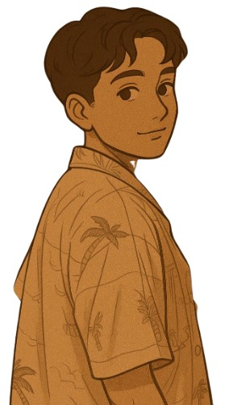
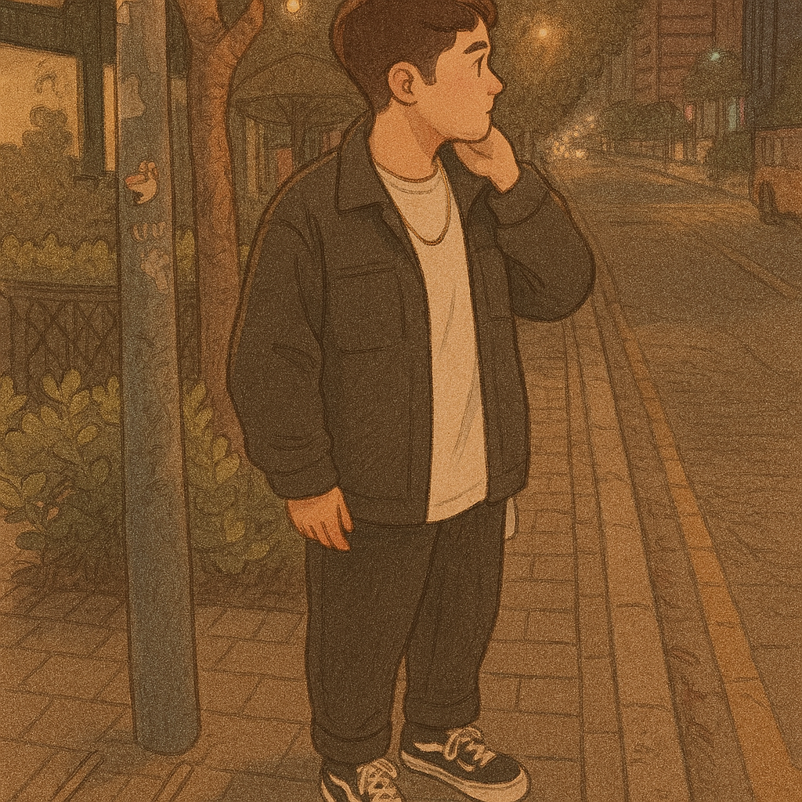

Barbara de Macedo de Souza - Unicuritiba (2º período)


Curitiba, Brasil
barbara.macedo9810@gmail.com
(41) 99876-3411
(41) 99703-4923
UniCuritiba — Análise e Desenvolvimento de Sistemas (2º período)
Sou estudante de Análise e Desenvolvimento de Sistemas. Estou explorando o mundo do Front-end e Back-end, com interesse especial em criar interfaces criativas e trabalhar com páginas. Tenho um olhar criativo e funcional para o desenvolvimento web, buscando criar interfaces intuitivas, acessíveis e visualmente atraentes.
Criação de site gastronômico com cardápio interativo e envio de ideias pelo WhatsApp.
Tecnologias: Python, Flask, HTML, CSS, JS
Ver projeto no GitHubVitrine em HTML e CSS puro para uma marca pessoal de gastronomia. Layout responsivo com tipografia harmonizada e seções como “Cardápio” e “Nossa História”.
Tecnologias: HTML, CSS puro - EM DESENVOLVIMENTO
Ver projeto online